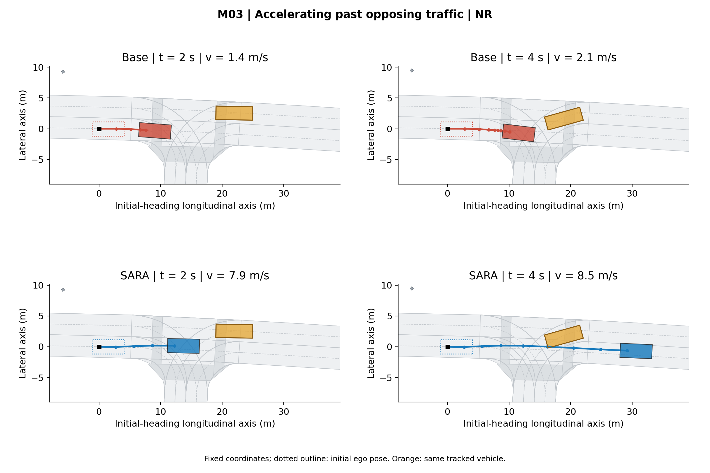
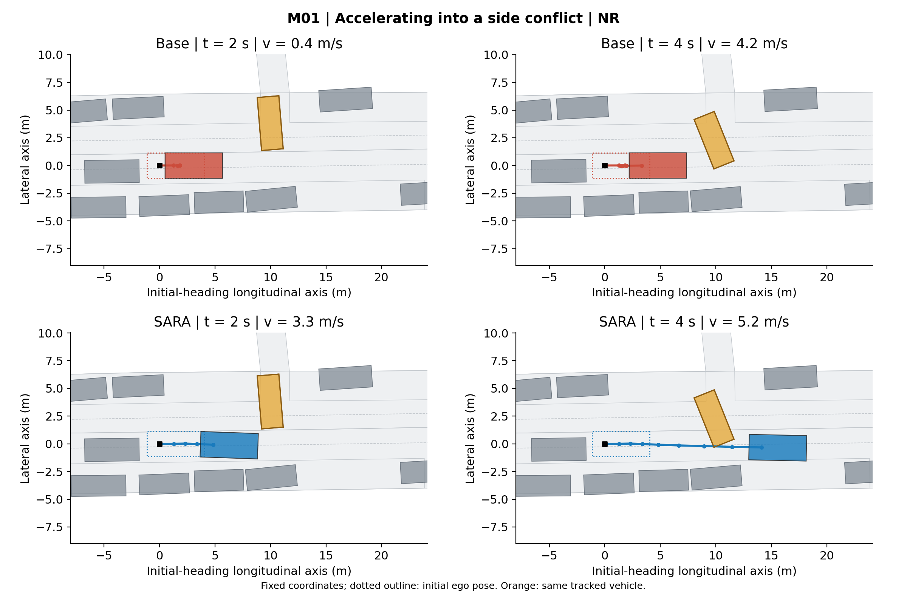
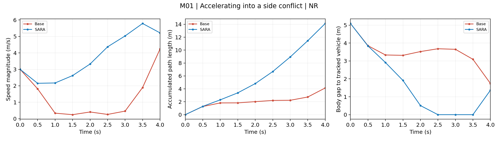
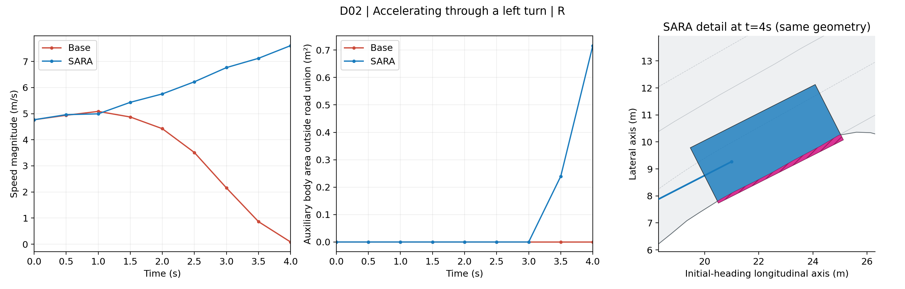
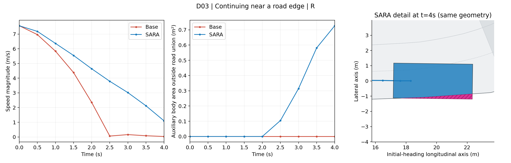

M03 · 遇到对向来车仍加速通过（NR）
面对对向车辆仍加速通过。两边 NC/DAC=1，TTC 从1降为0；SARA 与橙车最近采样车身间隙约0.11米，未检出采样车身重叠。适合讨论风险余量，不写成已碰撞。
场景：2021.09.16.19.49.00_veh-42_00990_01609-e2ae05340dba502d


保留原编号；上排Base、下排SARA；左2秒、右4秒。M组为NR，D组为R，每张图内评测模式一致。
侧向车辆尚未通过时继续加速。Base 等待后起步；SARA 更早加速，2.5–3.5 秒与橙色目标车出现采样车身重叠，正式 NC/TTC 从1降为0。
场景：2021.09.16.19.27.01_veh-45_01749_03230-10909749099354e6


面对对向车辆仍加速通过。两边 NC/DAC=1，TTC 从1降为0；SARA 与橙车最近采样车身间隙约0.11米，未检出采样车身重叠。适合讨论风险余量，不写成已碰撞。
场景：2021.09.16.19.49.00_veh-42_00990_01609-e2ae05340dba502d

原 F05：柱廊入口的弯曲通道。Base 较早收速，SARA 继续推进后越出地图通道，DAC 1→0；辅助最大车身角点超出约2.05米。不能根据该图声称已与柱子发生物理碰撞。
场景：2021.10.06.07.26.10_veh-52_01245_02064-289a58bd2ab6512b


左转后 Base 减速，SARA 持续加速，随后车身贴出道路边缘，DAC 1→0。辅助最大角点超出约0.20米，属于较细的车身越界，不能夸大成整车冲出道路。
场景：2021.09.16.14.39.34_veh-42_00032_00186-c7cb2e43b2d053b7


路沿附近，Base 减速停在前方，SARA 保持更多推进，后段车身越界逐步增加，DAC 1→0；辅助最大角点超出约0.34米。
场景：2021.09.16.19.27.01_veh-45_01749_03230-0b1250020ea95539


简单路段的减速时机差异：SARA 收速较晚，多走之后车身贴出路边，DAC 1→0；辅助最大角点超出约0.23米。画面差异较细，结合局部细节与速度曲线查看。
场景：2021.08.30.16.16.44_veh-40_00779_01088-63d6fbc938bc58cb